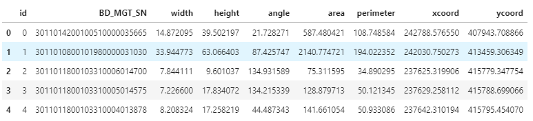
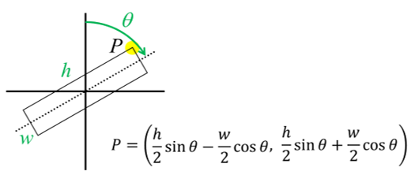
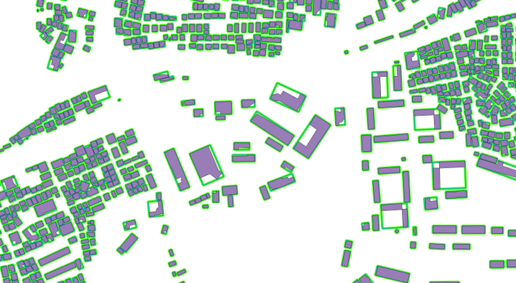

- csv 파일에서 읽은 기본 정보를 바탕으로 polygon shapefile을 생성하는 과정입니다.
shapely와fiona를 사용했으며,geopandas 0.8을 설치할 때 함께 설치되는 버전을 사용했습니다.shapely버전은 1.7,fiona버전은 1.8.13.post1 입니다.
References
1. csv 읽기
.csv파일에서 건물 정보를 읽어옵니다.1
2df_ombb0914 = pd.read_csv('./data/ombb_200914.csv')
df_ombb0914.head()
- 데이터 컬럼은 다음과 같습니다.
BD_MGT_SN: 건물관리번호 (건물 고유 번호)width$$w$$ : 최소경계도형 폭 ($$m$$)height$$h$$ : 최소경계도형 높이 ($$m$$)angle$$\theta$$ : 최소경계도형 회전각. 정북 기준 시계방향 ($$\text{deg.}$$)area: 최소경계도형 넓이 ($$m^2$$)perimeter: 최소경계도형 둘레 ($$m$$)xcoord: 최소경계도형 중심점 x좌표 (ESPG:5186)ycoord: 최소경계도형 중심점 y좌표 (ESPG:5186)

2. polygon 변환
- 행 하나가 건물 하나에 해당합니다.
- 행 하나마다 정보를 좌표로 변환해서
shapefile로 저장합니다.1
2
3
4
5
6
7
8
9
10
11
12
13
14
15
16
17
18
19
20
21
22
23
24
25
26
27
28
29
30
31
32
33
34
35
36
37from shapely.geometry import mapping, Polygon
import fiona
def create_polygons(x, y, width, height, angle, filename):
h_half = height/2
w_half = width/2
a_rad = np.deg2rad(angle)
# 꼭지점 좌표 생성
def get_coord(x, y, h_half, w_half, a_rad):
X = x + h_half * np.sin(a_rad) - w_half * np.cos(a_rad)
Y = y + h_half * np.cos(a_rad) + w_half * np.sin(a_rad)
return (X, Y)
# shapefile schema 지정
schema = {"geometry": "Polygon", "properties": {"id": "int"}}
# 행 수만큼 반복
n_polygon = len(x)
with fiona.open(f"{filename}", "w", "ESRI Shapefile", schema) as c:
for i in range(n_polygon):
p_x, p_y = x.iloc[i], y.iloc[i]
p_h, p_w, p_r = h_half.iloc[i], w_half.iloc[i], a_rad.iloc[i]
# closed loop을 이루도록 point 지정.
points = [get_coord(p_x, p_y, p_h, p_w, p_r),
get_coord(p_x, p_y, -p_h, p_w, p_r),
get_coord(p_x, p_y, -p_h, -p_w, p_r),
get_coord(p_x, p_y, p_h, -p_w, p_r),
get_coord(p_x, p_y, p_h, p_w, p_r),
]
# shapefile 작성
c.write({
"geometry": mapping(Polygon(points)),
"properties": {"id": 1}
})
3. QGIS에서 확인
- QGIS에서 읽어서 잘 보이는지 확인합니다.
- .csv를 출력한 원본(노랑)과 생성된 shapefile(파랑) 비교 결과 완벽히 일치합니다.
- 최소경계도형(보라)과 비교해봐도 잘 복원되었습니다.
